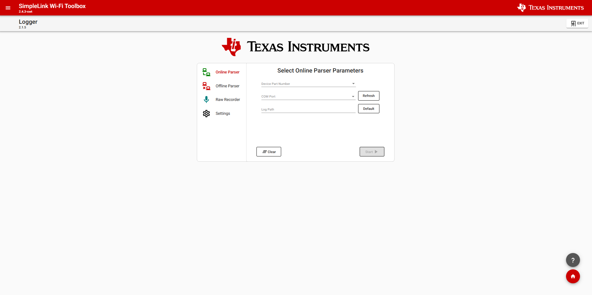
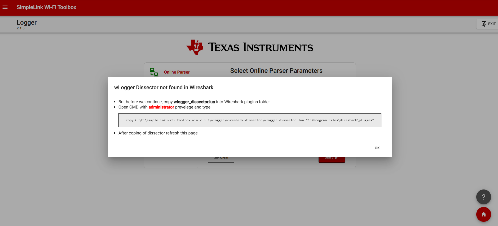
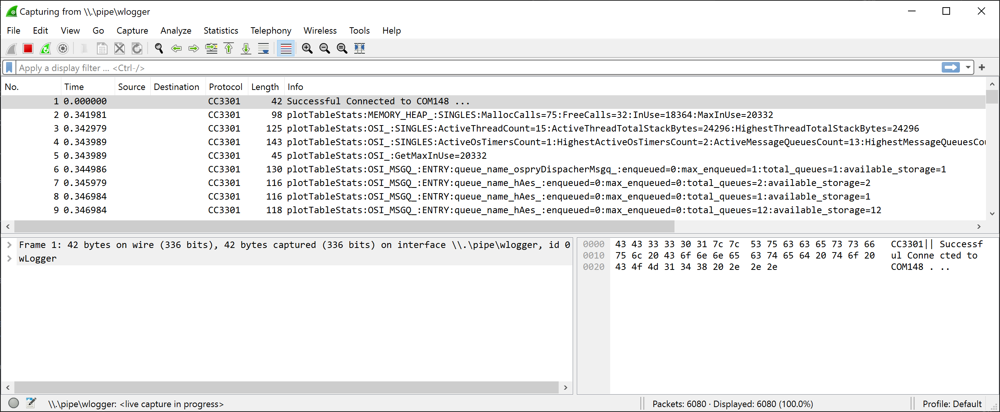
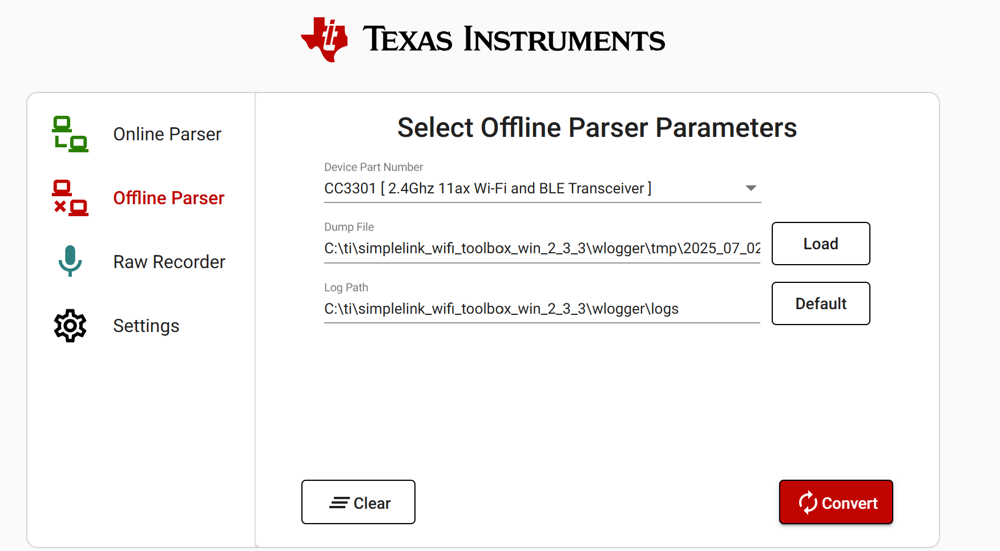
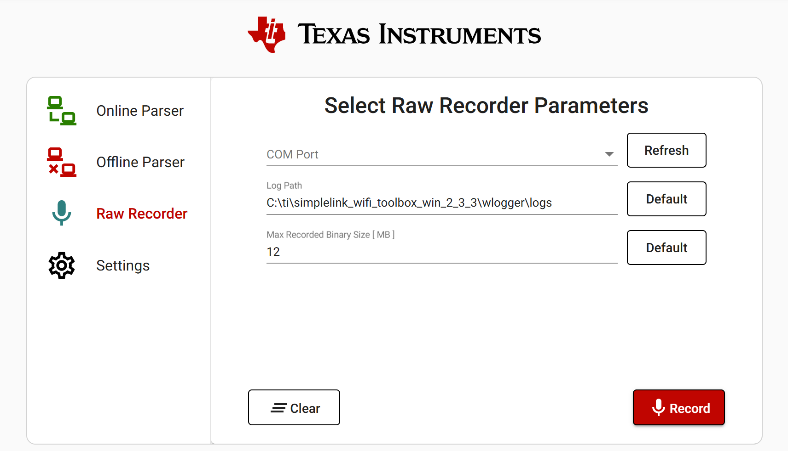

Logger User Guide¶
The Logger tool is used to collect logs from the device while it is operational. This is useful for understanding the behavior of the device should an operational fault occur.
{kind=link}

Figure 22 Logger Tool Page
Hardware Setup¶
Hardware setup for Logger tool is simple. Connect a USB-UART transceiver, like a FTDI chip, or FTDI-based serial cable to the Windows machine.
Use wires to connect the RX pin of the serial cable to the LOGGER pin on the CC35xx/CC33xx Evaluation Board (i.e. BP-CC3351 uses P2.34).
Lastly, connect GND on the serial cable to GND of the board. A table of the connections is shown below.
For visual guidance on connecting to the Logger of the device on your hardware refer to the BP-CC33X1 Hardware User Guide or M2-CC33X1 Hardware User Guide.
Software Setup¶
Online Parser¶
The Logger tool uses Wireshark as the GUI and must be installed. Wireshark can be installed from Wireshark.org.
Now, follow these steps to get started collecting logs:
Start the Wi-Fi toolbox by double clicking on
simplelink-wifi-toolbox.exe(refer to Wi-Fi Toolbox Startup User Guide ).A web browser should automatically open. If it doesn’t, navigate to
http://127.0.0.1:7777/in a browser.Start Logger Tool by clicking the
Loggerbutton on the Wireless Toolbox homepage.If this is the first time starting Logger, the
wLogger_dissectorlua script needs to be installed as a WireShark plugin. After pressing theStartbutton on logger a popup windown will appear with instructions. Follow the directions on screen, and be sure to open a Command Prompt line with Administrator privilege.
Figure 23 Logger Dissector Popup Window
Find the COM port of the serial cable in
Device Manageron the Windows PC.In the Logger Tool page, select the intended Device Part Number in the first drop down, and select the COM port of the serial cable. The log path is where the file will be saved and can be left as the default. Click
Start(refer to Figure 22).Wireshark should now start and logs will be collected from the CC33xx (refer to Figure 24).
{kind=link}
{kind=link}

Figure 24 CC33xx LOG Capture in Wireshark
Offline Parser¶
The Offline Parser will convert a binary dump log from the raw recorder into a readable csv file.
- Choose the device or parser file to be used (Depending on the device being used a different
logger.binparser file will be used). - Choose log.bin dump file that was generated from raw recorder to convert.
- Choose the log path in which the converted csv file will be saved.
{kind=link}

Figure 25 Offline Parser
Raw Recorder¶
The Raw Recording will save the logs as a binary dump without any parsing done. Parsing the binary can be done later using the offline parser
- Find the COM port of the serial cable in
Device Manageron the Windows PC. - In the Logger Tool page, select the intended Device Part Number in the first drop down, and select the COM port of the serial cable.
- Choose where the binary file will be saved to.
- Choose the size limit of the binary file. The reccomended size is 12MB.
{kind=link}

Figure 26 Raw Recorder